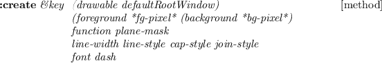
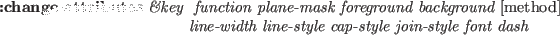

gcontext [class]
:super Xobject
:slots (gcid GCValues)
-
- defines the graphic context.
In EusLisp, every xwindow has its default GC.

-
- creates a gc with given attributes. Drawable is used by the Xserver
to know the screen and depth of the screen.
The resulted GC can be used in any drawables as long as they are
created on the same screen.
:gc [method]
-
- returns X's GC id.
:free [method]
-
- frees this GC.
:copy [method]
-
- makes a copy of this GC.
:foreground &optional color [method]
-
- if color is given,
it is set to the foreground color. Color is a pixel value.
:background &optional color [method]
-
- if color is given,
it is set to the background color. Color is a pixel value.
:foreback fore back [method]
-
- sets foreground and background colors at once.
:planemask &optional plane-mask [method]
-
- sets plane-mask.
:function x [method]
-
- sets drawing function.
X should either be one of the following numbers or keywords:
0=Clear, 1=And, 2=AndReverse, 3=Copy, 4=AndInverted, 5=NoOp, 6=Xor, 7=Or,
8=Nor, 9=Equiv,
10=Invert, 11=XorReverse, 12=CopyInverted, 13=OrInverted,
14=Nand, 15=Set, :clear, :and, :andReverse, :copy, :andInverted,
:NoOp, :Xor, :Or, :Nor, :Equiv, :Invert,
:XorReverse, :CopyInverted,
:OrInverted, :Nand, :Set.
:font x [method]
-
- sets the font attribute of this GC. X is
either a font-name or a font-ID.
If x is a font name (string), :font calls x:LoadQueryFont
to decide the font-id. If not found, "no such font ..." is warned.
If x is NIL (not given), the current font-ID of this GC is returned.
:line-width x [method]
-
- sets the line width in pixel.
:line-style x [method]
-
- sets the line-style (solid, dashed, etc.).
:dash &rest x [method]
-
- Each component of X is an integer.
:Dash sets the dash pattern of the line-style.
:tile pixmap [method]
-
- sets the tile of this GC to pixmap.
:stipple pixmap [method]
-
- sets the stipple of this GC to pixmap.
:get-attribute attr [method]
-
- gets attribute.
Attr is one of :function, :plane-mask, :foreground,
:background, :line-width, :line-style, :cap-style, :join-style,
:fill-style, :fill-rule, :font.
An integer value representing the attribute is returned.

-
- change attributes.
More than one attributes are changed at the same time.
font-id fontname [function]
-
-
If fontname is integer, it is returned regarding it as font-id.
If fontname is string, font-structure is inquired by
using x:LoadQueryFont, and its font-id is returned.
Fontname can be a shorthand of exact name, such as
"*-courier-24-*" for any 24-point courier font.
If the font could not be found, can't load font warning
is printed.
textdots str font-id [function]
-
-
returns a list of three integers representing (ascent descent width)
of the str (string) in dots.
2016-03-23